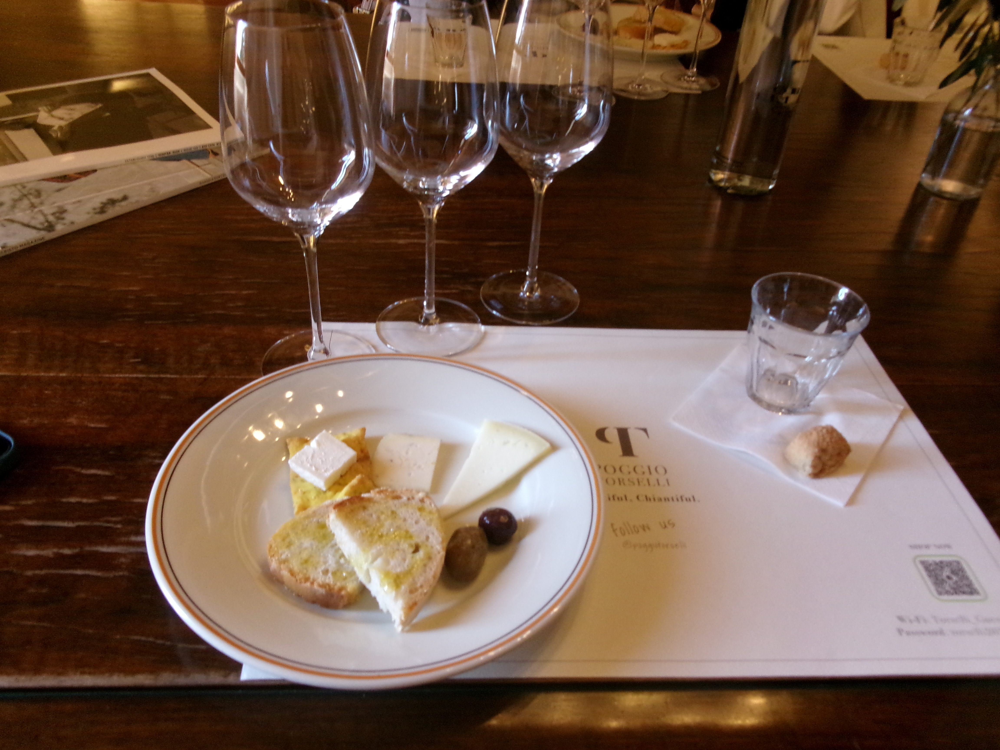

About My Interests
In this section, I would like to delve deeper into my passions and the experiences that have shaped my journey. My interests span across several domains, including technology, art, and traveling. Each of these areas has contributed uniquely to my perspective on life and learning. For instance, technology not only fascinates me due to its rapid innovation but also because of its potential to solve real-world problems. My artistic endeavors allow me to express creativity and explore new historical art and get to know more about history in a fun and interesting way. Furthermore, traveling has been a significant focus because my goal is to explore the whole world because in my opinion every country that I have visited already has taught me something new. These diverse interests have not only enriched my personal life but have also guided my academic and professional pursuits. As you continue to read, you will discover more about the projects I have undertaken, the milestones I have achieved, and the future plans I am excited about.
- Exploring new technologies
- Creating digital art
- Meeting new people along the way of my travels
- Engaging in community projects in other countries to explore them